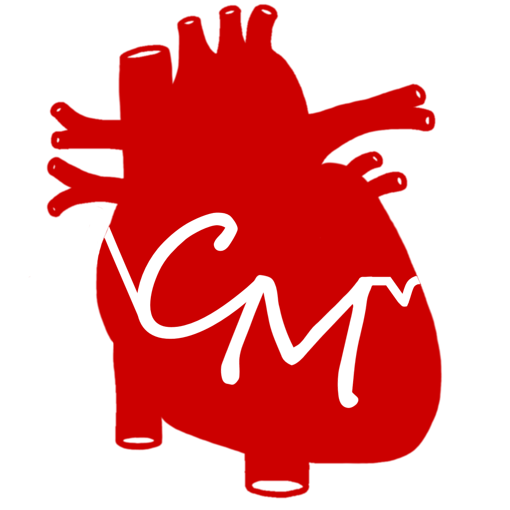

CardioMed Club
Tuesday Lunch | Rm 205
CardioMed is a high school organization dedicated to the science of cardiology and the practice of cardiothoracic surgery. Our mission is to educate and inspire our members to pursue these fields as their interests. We go beyond providing standard lectures and presentations, to involving our members in active discussions, projects, and events. We hope to create an environment in which every member feels compelled to actively contribute to the club and have an experience unique among the sea of interest clubs.
Officer Team: President: Kyle Chang, Vice President: Teresa Yang, Secretary: Tiffany Tian, Treasurer: Angela C. Liu, Public Relations Officer: Matthew Tran